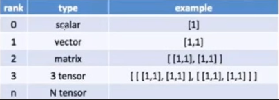
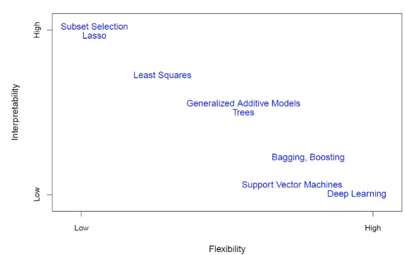
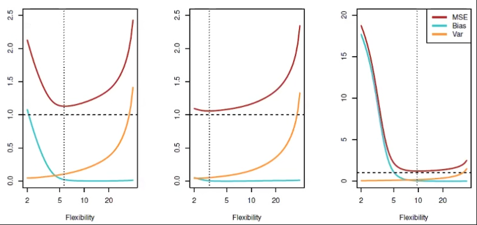

import numpy as np
import tensorflow as tf
print(tf.__version__)2.16.1Kibok Park
May 26, 2024
참여중인 딥러닝 스터디 1주차 기록입니다.

연산 등은 data type을 일치시켜야 정상적으로 가능
Variable 타입 (float32/64 , int8/16/32/64)
텐서플로우 2.0의 차이 > 즉시 실행모드(Eager Mode)지원
(1.x버전에서는 그래프를 생성하고 초기화하는 등 별도 작업이 필요했었음)
Rank(축) : 차원의 수
Shape(형상) : 0, 1, 2차원 등 데이터의 차원
dtype : string, float32, float16, int32, int8 등 데이터 타입
a = tf.constant(2)
b = tf.constant([2,3])
c = tf.constant([[2,3],[6,7]])
d = tf.constant(['hello'])
print('[tf.rank 차원의 수 출력]')
print(tf.rank(a))
print(tf.rank(b))
print(tf.rank(c))
print(tf.rank(d))
print()
print('[변수 자체 출력]')
print(a)
print(b)
print(c)
print(d)[tf.rank 차원의 수 출력]
tf.Tensor(0, shape=(), dtype=int32)
tf.Tensor(1, shape=(), dtype=int32)
tf.Tensor(2, shape=(), dtype=int32)
tf.Tensor(1, shape=(), dtype=int32)
[변수 자체 출력]
tf.Tensor(2, shape=(), dtype=int32)
tf.Tensor([2 3], shape=(2,), dtype=int32)
tf.Tensor(
[[2 3]
[6 7]], shape=(2, 2), dtype=int32)
tf.Tensor([b'hello'], shape=(1,), dtype=string)(1,)
tf.Tensor([0.8562789], shape=(1,), dtype=float32)rand2 = tf.random.normal(shape=[1,2], mean=0, stddev=1)
rand3 = tf.random.normal(shape=(3,2), mean=0, stddev=1)
print(rand2.shape)
print(rand2)
print()
print(rand3.shape)
print(rand3)(1, 2)
tf.Tensor([[-0.8665893 0.65539646]], shape=(1, 2), dtype=float32)
(3, 2)
tf.Tensor(
[[ 0.2873476 0.08000568]
[ 0.23599206 0.11011286]
[-3.2414987 0.7665266 ]], shape=(3, 2), dtype=float32)+, -, * 기호로도 가능)tf.Tensor(5, shape=(), dtype=int32)
tf.Tensor(5, shape=(), dtype=int32)tf.Tensor(1, shape=(), dtype=int32)
tf.Tensor(1, shape=(), dtype=int32)tf.Tensor(5, shape=(), dtype=int32)
<class 'tensorflow.python.framework.ops.EagerTensor'>
5
<class 'numpy.int32'># tf.convet_to_tensor()
c_sqrt = np.sqrt(c,dtype=np.float32)
c_tensor = tf.convert_to_tensor(c_sqrt)
print(c_sqrt)
print(type(c_sqrt))
print()
print(tf.convert_to_tensor(c_sqrt))
print(type(tf.convert_to_tensor(c_sqrt)))2.236068
<class 'numpy.float32'>
tf.Tensor(2.236068, shape=(), dtype=float32)
<class 'tensorflow.python.framework.ops.EagerTensor'>기본 dtype : float32, int32
연산시 tensor의 타입을 맞춰야 함
타입 변환에는 tf.cast() 사용
타입이 달라 연산이 안되는 오류는 텐서플로우를 사용하며 많이 발생, 데이터타입을 지정하며 쓰는 것을 권장 > 추가지식
2. 과 같이 0을 생략해도 float로 간주 파이썬은 인간처럼 데이터형이 달라도 계산하지만(2+2.0), 다른 언어는 오류 발생
tf.Tensor(2, shape=(), dtype=int32)
tf.Tensor(2.0, shape=(), dtype=float32)--------------------------------------------------------------------------- InvalidArgumentError Traceback (most recent call last) Cell In[33], line 2 1 # 일부러 오류나게 한 코드 ----> 2 a+b File c:\Users\kibok\AppData\Local\Programs\Python\Python311\Lib\site-packages\tensorflow\python\util\traceback_utils.py:153, in filter_traceback.<locals>.error_handler(*args, **kwargs) 151 except Exception as e: 152 filtered_tb = _process_traceback_frames(e.__traceback__) --> 153 raise e.with_traceback(filtered_tb) from None 154 finally: 155 del filtered_tb File c:\Users\kibok\AppData\Local\Programs\Python\Python311\Lib\site-packages\tensorflow\python\framework\ops.py:5983, in raise_from_not_ok_status(e, name) 5981 def raise_from_not_ok_status(e, name) -> NoReturn: 5982 e.message += (" name: " + str(name if name is not None else "")) -> 5983 raise core._status_to_exception(e) from None InvalidArgumentError: cannot compute AddV2 as input #1(zero-based) was expected to be a int32 tensor but is a float tensor [Op:AddV2] name:
Tensorflow가 작업을 좀 더 빠르게 동작하게 하기 위한 방법으로 Graph로 만들어 연산을 진행
tf.Graph
유연성이 있음
자동으로 그래프를 생성(Auto Graph)
그래프로 변환하여 사용 -> GPU 연산 가능
파이썬으로 구성된 함수를 텐서플로우의 그래프 형태로 다루고 싶을 때 사용가능
원본 함수가 필요하다면 (tf.function).python_function()
@tf.function
def my_function(x):
return x**2 - 10*x + 3
print(my_function(2))
print(my_function(tf.constant(2)))
print(tf.autograph.to_code(my_function.python_function))tf.Tensor(-13, shape=(), dtype=int32)
tf.Tensor(-13, shape=(), dtype=int32)
def tf__my_function(x):
with ag__.FunctionScope('my_function', 'fscope', ag__.ConversionOptions(recursive=True, user_requested=True, optional_features=(), internal_convert_user_code=True)) as fscope:
do_return = False
retval_ = ag__.UndefinedReturnValue()
try:
do_return = True
retval_ = ag__.ld(x) ** 2 - 10 * ag__.ld(x) + 3
except:
do_return = False
raise
return fscope.ret(retval_, do_return)
import timeit
class SequentialModel(tf.keras.Model):
def __init__(self, **kwargs):
super(SequentialModel, self).__init__(**kwargs)
self.flatten = tf.keras.layers.Flatten(input_shape=(28,28))
self.dense_1 = tf.keras.layers.Dense(128, activation = 'relu')
self.dropout = tf.keras.layers.Dropout(0.2)
self.dense_2 = tf.keras.layers.Dense(10)
def call(self,x):
x = self.flatten(x)
x = self.dense_1(x)
x = self.dropout(x)
x = self.dense_2(x)
return x
input_data = tf.random.uniform([60,28,28])
eager_model = SequentialModel()
graph_model = tf.function(eager_model)
print(f"Eager time: {timeit.timeit(lambda: eager_model(input_data), number = 10000)}")
print(f"Graph time: {timeit.timeit(lambda: graph_model(input_data), number = 10000)}")c:\Users\kibok\AppData\Local\Programs\Python\Python311\Lib\site-packages\keras\src\layers\reshaping\flatten.py:37: UserWarning: Do not pass an `input_shape`/`input_dim` argument to a layer. When using Sequential models, prefer using an `Input(shape)` object as the first layer in the model instead.
super().__init__(**kwargs)Eager time: 18.815009500001906
Graph time: 4.405216699997254tf.Variabletf.GradientTape API를 사용
tf.Variable 같은 일부 입력에 대한 기울기 계산
변수가 포함된 연산만 기록
텐서플로우의 꽃
ai가 많이 한다는 단순계산은 미분이며 이를 많이 하므로 자동미분은 도움이 됨
cpu에서 gpu로 넘기는 것은 c++수준의 코드를 짜야하고 넘겨야하는 번거로움이 있는데, 이를 자동으로 해줘서 편함
<class 'tensorflow.python.ops.resource_variable_ops.ResourceVariable'>
<class 'tensorflow.python.framework.ops.EagerTensor'># tape내에 선언하지 않은 x2로 인해 에러 발생 (일부러 에러낸 코드)
# 모든 수식을 gradient(추적)하는 것은 비용이 많이 드므로 필요한 것만 with로 선언
x2 = tf.Variable(4)
dy_dx = tape.gradient(y,x2)
dy_dx.numpy()--------------------------------------------------------------------------- RuntimeError Traceback (most recent call last) Cell In[43], line 2 1 x2 = tf.Variable(4) ----> 2 dy_dx = tape.gradient(y,x2) 3 dy_dx.numpy() File c:\Users\kibok\AppData\Local\Programs\Python\Python311\Lib\site-packages\tensorflow\python\eager\backprop.py:1005, in GradientTape.gradient(self, target, sources, output_gradients, unconnected_gradients) 965 """Computes the gradient using operations recorded in context of this tape. 966 967 Note: Unless you set `persistent=True` a GradientTape can only be used to (...) 1002 called with an unknown value. 1003 """ 1004 if self._tape is None: -> 1005 raise RuntimeError("A non-persistent GradientTape can only be used to " 1006 "compute one set of gradients (or jacobians)") 1007 if self._recording: 1008 if not self._persistent: RuntimeError: A non-persistent GradientTape can only be used to compute one set of gradients (or jacobians)
[용어정리]
response, target : Y값
feature, input, predictor : X값
\(\epsilon\)(엡실론) : 오차
\(\hat{x}\) : 예측값 \(x\) (위의 기호는 hat)
 >[용어정리]
flexibility : 성능, performance (100문제중 80문제를 찾추는가)
interpretability : 해석
Least Squares : Linear regression
error는 Variance와 Bias로 이루어져 있다 > Variance(V), Bias(B) 예시 (과녁) V 낮음 B 낮음 : 정중앙에 잘 모여있음 V 낮음 B 높음 : 잘 모여있지만 위치가 잘못됨 V 높음 B 낮음 : 정답 근처이지만 불안정하게 퍼져있음 V 높음 V 높음 : 정답 근처도 아니고, 불안정하게 퍼져있음
Bias낮음 : Training에서 적중률이 높다, Overfitting 정답 자체를 틀리는 것과 관계
Variance높음 : 모델이 불안정하다 변동에 과민하게 반응하는 것과 관계 (결과의 극단적 변화, 무의미한 결과는 무의미한 것으로 간주해야 안정적인 모델)
둘 다 낮추기는 힘듦 (B낮추려면 V높아짐, B낮추려면 V 높아짐)
둘 다 낮추기 위한 단 하나의 방법 : 데이터를 추가한다
Bias와 Variance를 고려한 가장 error가 적은 부분 Sweet spot

Copyright © 2024 Kibok Park All rights reserved.